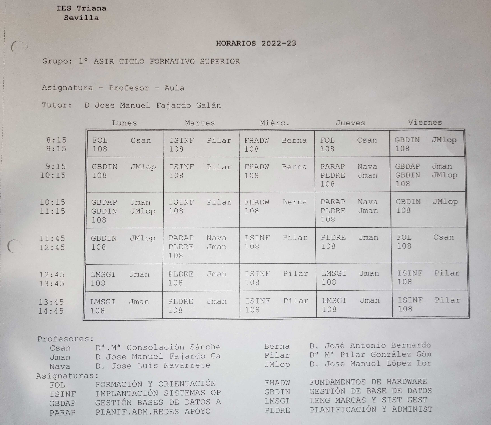

Xavi Martínez se ha convertido en el hombre del momento. El supuesto tongazo del que se le acusa tras la victoria del candidato que defendía en la gala de Objetivo Eurovisión y la agresión posterior que sufrió por este mismo motivo en el backstage del plató donde se celebró la gala no deja lugar a dudas: es posiblemente la persona más criticada del panorama social patrio.
Y es que, aunque ha intentado defenderse de las duras acusaciones, las redes sociales se le han echado encima por su falta de imparcialidad como parte del jurado del que formaba parte junto a Javier Cárdenas (Europa FM) y Virginia Díaz (RNE).
Sin embargo, a parte del mar sonado favoritismo por el candidato que finalmente nos representará en Kiev, poco más se sabe de este controvertido personaje que ocupa titulares en prácticamente todos los medios del país.
